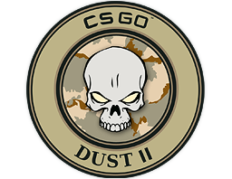

Dust 2
O mapa foi lançado pela primeira vez em março de 2001 para o jogo original de Counter-Strike e está presente em todos os jogos da série. Além das atualizações gráficas, sofreu alterações mínimas após o lançamento inicial, antes de receber uma grande revisão no Counter-Strike: Global Offensive em outubro de 2017. O mapa é popular entre os jogadores desde o lançamento inicial e o design original e revisado em A ofensiva global foi recebida positivamente pelos jogadores e cartógrafos.
Inferno
O mapa fica em uma pequena cidade com arquitetura européia. Na versão ofensiva global , a presença da facção separatista sugere que o mapa está definitivamente definido na Itália, como evidenciado pelos sinais escritos em italiano vistos ao redor do mapa. No entanto, a facção separatista também está presente no país basco da Espanha e da França, por isso é plausível que possa estar lá também.

Mirage
O mapa é temático como uma cidade do Oriente Médio, mas devido à sua grande semelhança com a arquitetura de estilo marroquino, provavelmente está situado em algum lugar do Marrocos.
Overpass
A configuração do mapa é um viaduto do canal e o parque construído acima em Berlim, Alemanha. O GSG-9 deve proteger uma remessa militar parada no viaduto do canal, enquanto o Phoenix Connexion pode atacar a remessa de frente ou tentar destruir a passagem superior bombardeando o pilar abaixo.

Canals
O mapa recria a área geral em torno da Piazza San Marco (também conhecida como Praça de São Marcos) em Veneza. Palácio Ducal (Palazzo Ducale), Ponte dos Suspiros (Ponte dei Sospiri), Basílica de São Marcos, Campanário de São Marcos, Torre do Relógio de São Marcos e as Colunas de San Marco e San Todaro são exemplos de referências reais.
A base do Campanile de São Marcos serve como local da bomba A, enquanto a Ponte dos Suspiros serve como local da bomba B.